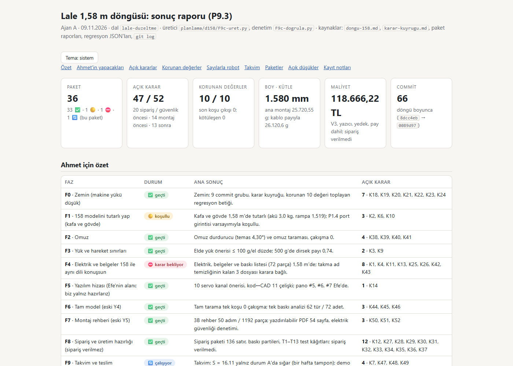

Lale F9c: sonuç raporu, ölçüm ve kayıt (P9.3)
Ajan C (ölçüm ve kayıt) · 09.11.2026 · dal lale-duzeltme · 1,58 m döngüsünün son paketi · kaynaklar: F9c-brief.md, F9c-gunluk.md (orkestratör turu ve düzeltme 1 dahil), F9c-kontrol.md (yeniden kontrol, düzeltme 1: GEÇER), karar-kuyrugu.md, regresyon-son-kosu.json
Asıl çıktı: sonuç raporu (sonuc-rapor.html). Ahmet için tek tablo özet, 36 paketin envanteri, açık kararlar, korunan değerler, sayılarla robot, takvim ve açık düşükler orada. Bu sayfa yalnız C'nin commit öncesi ölçümlerini ve kaydını özetler.
F9c-dogrula.py hata 0; yeniden üretim bayt bayt aynıC'nin commit öncesi koşuları (22:43–22:46, depo kökünden, py -3 -B, PYTHONIOENCODING=utf-8; FreeCAD açılmadı, süreç 0). F9c-uret.py çıktısı depodaki dosyanın üzerine yazılmasın diye depo dışındaki bir kopyaya yönlendirildi; demo yerinde üretildi ve önceden alınan kopyayla karşılaştırıldı. Koşulardan sonra git status --porcelain koşudan öncekiyle aynı; kalan headless Chrome süreci 0. Takma ad, soyad ve yerel kullanıcı yolu araması, adlar komut satırına ve hiçbir dosyaya yazılmadan, çalışma anında türetilerek yapıldı (takma ad git uzak adresinin sahibinden, soyadlar ekip tablosundan); tarayıcının kendi denetimi bir öz testle sınandı.
Kabul ölçütleri (C'nin ölçümleri)
| Ölçüt (brief) | Ölçülen | Kaynak | Durum |
|---|---|---|---|
Her paket raporda bir kez; sayısı dongu-158.md ile eşit | plan 36, tablo 36, tekrar / eksik 0; her satırın durum emojisi plandakiyle aynı; döngü commit'i 66, plandaki bulunamayan hash 0, pakete bağlanamayan commit 0 | F9c-dogrula.py [5]; F9c-uret.py özeti | GEÇER |
| Her sayı bir kaynağa bağlı; doğrulama 0 | data-j 81 değer, data-h 46 sayım, data-kaynak 524 öğe / 548 sayı, data-satir 129; bağsız sayı 0; takvim 9 / 9 satır, hücre farkı 0; P8.1 93 / 136; düşük satırları sayfa = JSON (47) | F9c-dogrula.py [1]–[5b] | GEÇER |
| Açık karar sayısı kuyrukla eşit | C'nin kendi sayımı: özet tablosunda 52 | Kn | satırı (benzersiz 52), durumu açık olan 47; gövdede 52 ## K başlığı, 5'i KAPANDI; kuyruğun "Açık: 47 … Kapandı: 5 … Toplam 52 madde" satırı aynı. Raporun tablosu 47 | karar-kuyrugu.md; F9c-dogrula.py [6] | GEÇER (47 / 52) |
| Bağlantılar 0 kırık | göreli 71 (benzersiz 33), kırık 0; sayfa içi çapa 10, hedefsiz 0; dış bağlantı 0 | F9c-dogrula.py [7] | GEÇER |
| Konsol 0, 360 px 0 | headless Chrome, file://: 1400 px ve 360 px'te konsol hatası 0, taşan öğe 0; 360 px'te innerWidth = scrollWidth = clientWidth = 360 | F9c-dogrula.py [9] | GEÇER |
| Yeniden üretim bayt bayt aynı | F9c-uret.py (çıktı depo dışına): 133.566 bayt, sha256 7a2fe2108095; depodaki sonuc-rapor.html ile cmp fark 0 | C, 22:44 | GEÇER |
| Demo bayt bayt aynı; F9b 0 | demo_uret.py çıkış 0 (127 sayı anahtarı, 14 karar, 153 kalem, 1192 düğüm); önceki kopyayla cmp fark 0, sha256 e0cc5ff4e5a7. F9b-dogrula.py --tarayicisiz çıkış 0, "GECER (hata 0)" | C, 22:45 | GEÇER |
carpisma_kos.py kontrol | çıkış 0 ("izlenen 17 dosyanin ozetleri kayitla ayni") | C, 22:43 | GEÇER |
regresyon.py --yazma | çıkış 0, 10 / 10 "aynı" (tablo aşağıda) | C, 22:43:45; taban 14:30:50 | GEÇER |
| Takma ad, soyad, yerel yol, artifact adresi | commit listesinin 20 dosyasında 0 (10 PNG'nin baytları ve metin parçaları dahil); 1. commit'in staged içeriğinde 17 dosyada 0, 2. commit'in staged içeriğinde 2 dosyada 0. F9c-dogrula.py [8] ayrıca 7 dosyada 0 | C, çalışma anında türetilen adlar | GEÇER |
Ölçümler: komut ve çıkış kodu
| # | Komut | Çıkış | Sonuç |
|---|---|---|---|
| 1 | py -3 -B tasarim/freecad/carpisma_kos.py kontrol | 0 | 17 özet kayıtla aynı |
| 2 | py -3 -B planlama/d158/regresyon.py --yazma | 0 | GEÇER, kötüleşen yok, dosya yazılmadı |
| 3 | F9c-uret.py (main(), CIKTI depo dışına) + cmp | 0 / 0 | 36 paket (✅ 33, 🟡 1, ⛔ 1, 🔄 1), 66 commit, karar 52 / açık 47; faz F0 7, F1 3, F2 4, F3 2, F4 8, F5 1, F6 3, F7 3, F8 12, F9 4; bayt bayt aynı |
| 4 | py -3 -B planlama/d158/F9c-dogrula.py (tarayıcı dahil; TAKMA_AD / SOYADLAR ortam değişkeniyle, değerler basılmadan) | 0 | "SONUÇ: GEÇER (hata 0)"; görüntü yazılmadı (--goruntu yok) |
| 5 | py -3 -B tasarim/cad/demo_uret.py + cmp | 0 / 0 | demo değişmedi |
| 6 | py -3 -X utf8 -B planlama/d158/F9b-dogrula.py --tarayicisiz | 0 | "GECER (hata 0)"; 1,65 eşleşmesi 12, hepsi gömülü maliyet.json kopyasında (bilinen, KT-F9b-3) |
| 7 | Karar kuyruğu sayımı (grep) | 0 | açık 47 / toplam 52 |
| 8 | Ad / yol / artifact taraması (çalışma ağacı, staged, PNG) | 0 | 20 + 17 + 2 dosya, hepsi 0 |
| 9 | sha256sum karar-kuyrugu.md Robot-Tasarim-Demosu.html | 0 | 27e97f88e0ac, e0cc5ff4e5a7: B'nin yeniden kontrolündeki değerlerle aynı |
Regresyon değerleri (regresyon.py --yazma, 22:43:45)
| Değer | Taban | Şimdi | Eşik | Durum |
|---|---|---|---|---|
boy_mm | 1580 | 1580 | 1580 ± 0,05 | aynı |
cakisma_kafa_ici | 0 | 0 | 0 | aynı |
cakisma_kabuk_ici | 0 | 0 | 0 | aynı |
cakisma_kabuk_x_iskelet | 0 | 0 | 0 | aynı |
cakisma_ev_pozu | 0 | 0 | 0 | aynı |
rampa_yuksuz | 1,519 | 1,519 | ≥ 1,5 | aynı |
tilt_payi | 3,64 | 3,64 | ≥ 3 | aynı |
pan_payi | 2,21 | 2,21 | ≥ 2 | aynı |
mik_hoparlor_mm | 574,3 | 574,3 | ≥ 400 | aynı |
sy8205_x_usb_mm3 | 0 | 0 | 0 | aynı |
Sonuç: "GEÇER (hepsi okundu, kötüleşen yok)". Döngü başıyla karşılaştırma sonuç raporunda: 10 değerin 9'u döngü başıyla aynı, rampa payı 1,517 → 1,519 (P1.1, iyileşme).
Düzeltme turları
| Tur | Girdi | Yapılan (A) | Sonuç |
|---|---|---|---|
| İlk tur | Brief (P9.3) | Rapor F9c-uret.py ile üretildi, F9c-dogrula.py 0. Tutarsızlıklar günlükte "orkestratöre" diye yazıldı (§7, 9 madde) | açık karar 45 / 50 |
| Orkestratör turu | Orkestratörün altı kararı (A'nın düzeltme turu 1, günlük §11) | (1) dongu-158.md son C ajanında commit'lenir, rapor çalışma ağacını esas alır. (2) §1 rampa metni orkestratörce düzeltildi. (3) KT-F7c-2 / -3 kuyruğa K51, K52 olarak girdi (55 ekleme, 1 değişen satır). (4) demo_uret.py koşuldu; yalnız gömülü kuyruk izi değişti (ba78d2666dfe → 27e97f88e0ac). (5) P5.3 = F5 + F5b. (6) Artifact adresi yazılmaz | açık karar 47 / 52; K51, K52 A grubunda |
| İlk kontrol (B) | A'nın orkestratör turu sonrası çıktısı | — | KOŞULLU: kritik 0, orta 2 (O-1 takvimin 9 satırından 3'ü düşmüş; O-2 KT-F7c-1 elektrik listesinde yok), düşük 10 (D-1 … D-10) |
| Düzeltme 1 | O-1, O-2, D-1 … D-10 (A'nın düzeltme turu 2, günlük §12) | O-1: takvim döngüsü ayraç satırını atlıyor, boş hücreyi koruyor; 9 / 9 satır, sonuç cümlesi tam alıntı. O-2: F9c-dusukler.json'a KT-F7c-1 (elektrik 17 → 18, toplam 47). D-1: [5b] bağımsız denetimler (takvim, P8.1, düşükler, KT kapsamı). D-2: P8.1 94 → 93. D-3: K47 / K48 / K49 "önerilen varsayılan". D-4: K3 C → B. D-5 … D-10 metin ve atıf düzeltmeleri. 10 PNG yenilendi | — |
| Yeniden kontrol (B) | Düzeltme 1 | — | GEÇER: O-1, O-2 kapandı; D-1 … D-10 kapandı ya da sınırıyla yazıldı. Bozma testleri: 8 bozmanın 8'i yakalandı, tutarlı silme (3d) yakalanmadı → yeni düşük D-11. Kritik 0, orta 0 |
Açık düşük ve sonraki tura bırakılanlar
Hiçbiri commit'i engellemiyor. Bugünkü rapor doğru; bunlar denetimin ve belgelerin sınırları.
- D-11 (düşük, yeni; B'nin yeniden kontrolü):
F9c-dogrula.py[5b] bir KT kodunu "karşılandı" saymak için kodun düşük JSON'unda, kuyrukta ya da günlük §6'da herhangi bir yerde geçmesini yeterli buluyor. KT-F7c-1 §6'da "satır olarak eklendi" açıklamasıyla geçtiği için satır sayfadan ve JSON'dan tutarlı biçimde silinince denetim 0 dönüyor (test 3d). Yani O-2 türünden bir eksik bugün de yakalanmazdı. Öneri: §6'da ayrı bir "dışarıda bırakılanlar" listesi aransın ya da açık düşük için JSON'unkodalanına bakılsın. Sonraki pakette. - KT-F9b-3 (iş, karar değil; sahibi
maliyet.json): eski metinler (CadQuery / 125 cm notu, 1,65 m ölçülerine dayanan 8 kalem notu), Nextion'a dayanan kalemler ve kuyrukla çakışan eski K numaraları (ör.maliyet.json'daki "K3" akü). Değişincedemo_uret.pykoşulur. BugünF9b-dogrula.py'nin 12 "1,65" eşleşmesi bu gömülü kopyadan. - KT-F9b-4 (iş, karar değil; sahibi belge sahibi): depodaki
CLAUDE.md12–13. satırlar,README.md:21veproje-plani.md:235eski demo tarifini (robot_cad.py/viewer-template.html) taşıyor; demo artıkdemo_uret.pyile 1,58 m kaynaklardan üretiliyor.CLAUDE.md'de K25 da açık; ikisi birlikte düzeltilebilir.
KT-F9b-3 ve KT-F9b-4 orkestratör kararıyla düşük tablosuna alınmadı (sayım 47 korunuyor); gerekçe F9c-gunluk.md §6 ve §7 madde 9. Ayrıca günlükte (§7 madde 6): demonun karar listesi demo_uret.py'deki KARARLAR sabitinden geliyor (14 madde) ve K50, K51, K52'yi göstermiyor; eklemek betiği düzenlemeyi gerektirir. Doğrulamanın sınırlı denetimleri (grup sayıları, data-kaynak alt dize araması, data-satir yalnız aralık) günlük §12'de.
Görüntü

F9c-goruntu-*.png.Kayıt
| Commit | Konu | Dosya |
|---|---|---|
58238f7 | Sonuç raporu ve Ahmet'e özet: sonuc-rapor.html, F9c-uret.py, F9c-dogrula.py, F9c-dusukler.json, F9c-brief.md, F9c-gunluk.md, F9c-kontrol.md, 10 PNG | 17 |
a209e30 | Karar kuyruğu K51–K52 ve demo kuyruk izi: karar-kuyrugu.md, Robot-Tasarim-Demosu.html | 2 |
| bu rapor | F9c-rapor.html (ayrı commit; hash'i dongu-158.md P9.3 satırında) | 1 |
| plan | dongu-158.md: P9.3 ✅, kilit satırı silindi (döngü sonu) | 1 |
Commit'ler B'nin kesin git add listesiyle atıldı (açık liste; -A, . ya da klasör kullanılmadı); her commit'ten önce git diff --cached --stat listeyle birebir. 1. commit: 17 yeni dosya, +2.677 satır; staged içerik çalışma ağacıyla bayt bayt aynı. 2. commit: 2 değişen dosya, +56 / −2. dongu-158.md'de C'nin kaydında yalnız iki mekanik değişiklik yapıldı (P9.3 durum hücresi ve kilit satırı); rapor yeniden üretilmedi, raporun 🔄'ı "bu paket" diye açıklanıyor. Dışarıda kalanlar: FREECAD-KILIT.txt, K23 (13 kabuk PNG ve montaj/yerlesim-kontrol.json), tasarim/cad/lale158-model.js (K48), F5-pano-govde.txt, F5b-pano-govde.txt, lale_dongu*, kafa-yerlesim/kaynak/, raporlar/, tasarim/solidworks/, kvkk/, rapor/, tubitak-2209b/.